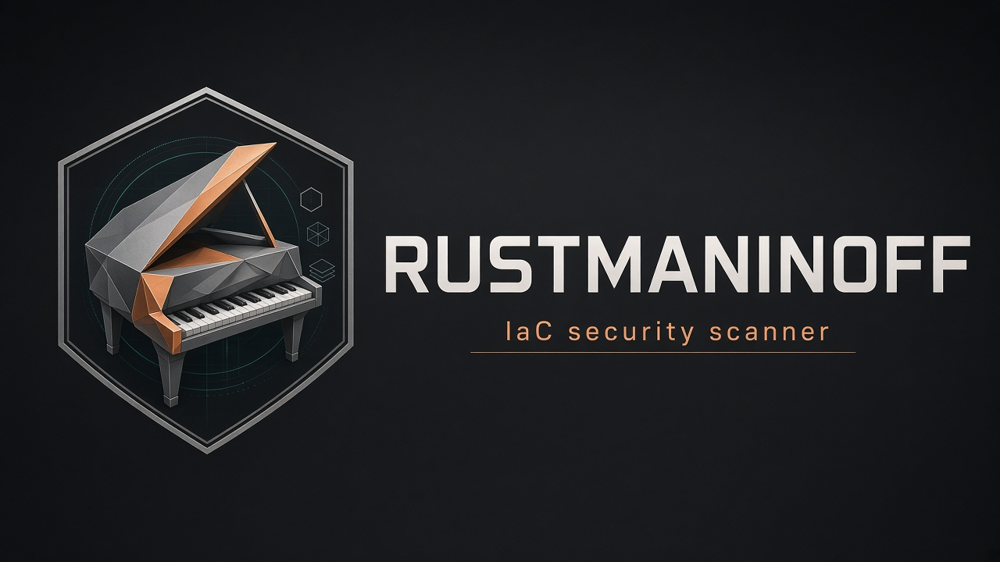

Terraform
.tf and .tf.json managed resources and data sources. Data sources are IR kind data, type data.TYPE.

v0.2.0 · Apache-2.0
Terraform, CloudFormation, Kubernetes, and Dockerfiles. Checkov-compatible YAML policies and CKV ids. A Rust engine, not a port of the Checkov runtime.
cargo install rustmaninoff --locked
rustmaninoff scan . --framework terraform,cloudformation,kubernetes,docker.tf and .tf.json managed resources and data sources. Data sources are IR kind data, type data.TYPE.
YAML and JSON Resources. Attribute paths are relative to Properties.
Multi-document YAML, including List. Inline skip via checkov.io/skip.
Dockerfile, Containerfile, *.dockerfile. FROM tag, USER, COPY vs ADD, HEALTHCHECK.
Wall-clock CLI time, Apple M2, macOS 14.8. Median of three runs after warmup. 40 Terraform files (1,080 resources), 20 CloudFormation files (300 resources), 20 Kubernetes files (160 resources). Catalogs are not the same: Rustmaninoff ran 181 attribute checks.
| Scanner | Full | Terraform | CloudFormation | Kubernetes |
|---|---|---|---|---|
| Rustmaninoff 0.2.0 | 20 ms | 11 ms | 9 ms | 11 ms |
| Checkov 3.3.21 | 4.51 s | 3.72 s | 2.71 s | 2.92 s |
| Trivy 0.74.0 | 5.71 s | 2.67 s | 1.29 s | 2.59 s |
A check definition is the pass condition. Built-in YAML is rewritten from Checkov (Bridgecrew / Palo Alto Networks, Apache-2.0) and keeps published CKV ids.
metadata:
id: CKV_AWS_3
name: Ensure all data stored in the EBS is securely encrypted
severity: HIGH
framework: terraform
resource_types:
- aws_ebs_volume
definition:
cond_type: attribute
attribute: encrypted
operator: equals
value: trueTerraform data sources, Dockerfile parser, Docker checks CKV_DOCKER_1–4, more TF/CFN/K8s attribute checks. Catalog is 181 (94 Terraform, 51 CloudFormation, 32 Kubernetes, 4 Docker).
Graph checks (CKV2_*), Terraform plan JSON, remote modules, Helm, Kustomize, secrets scanning, full variable evaluation. Interpolations remain unknown.